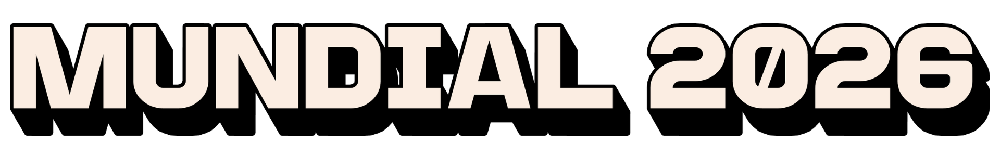
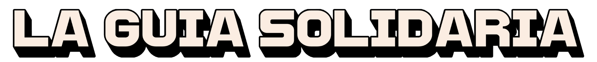
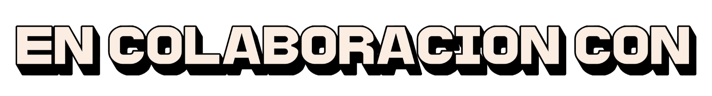
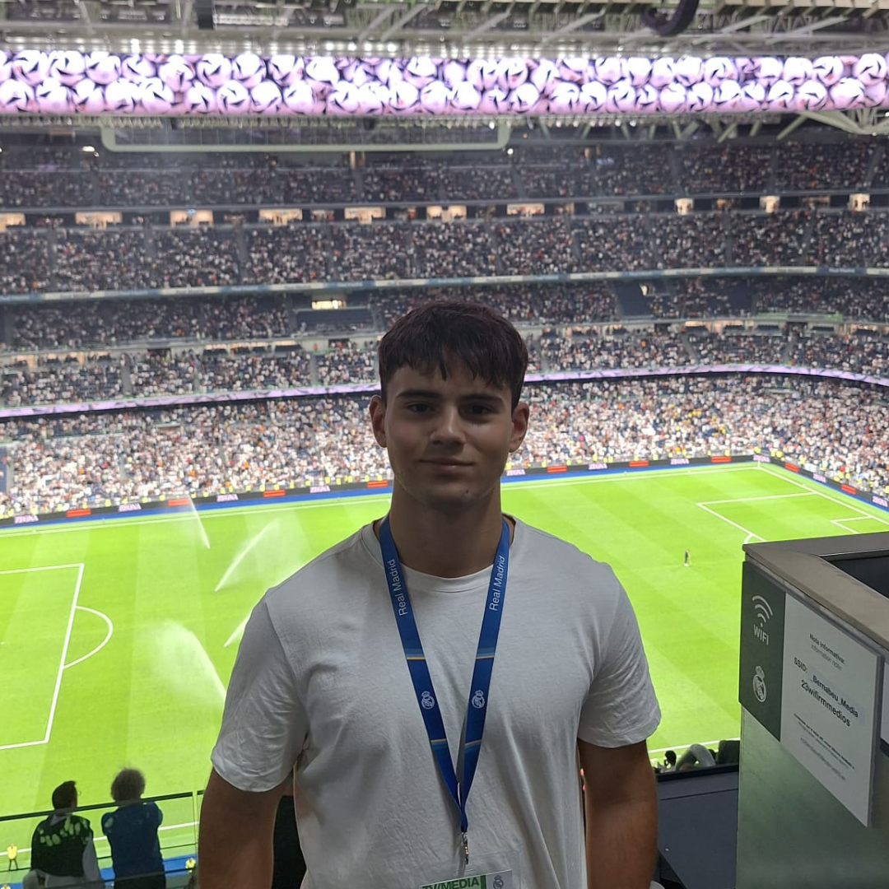

La GUÍA SOLIDARIA es el resultado de combinar nuestra pasión por el fútbol con el interés por el periodismo y contar historias,
junto a un fin de aportar nuestro granito de arena a una causa benéfica.
En esta ocasión, hemos decidido colaborar con Save The Children, una organización que trabaja para garantizar los derechos de la infancia en todo el mundo, y que tiene un hospital
En esta ocasión queremos colaborar con Save The Children y dar toda la ayuda que podamos a su hospital en la Franja de Gaza. Son muchas las informaciones y pruebas que corroboran el horror que se está viviendo en una de las situaciones más lamentables para la especie humana, que si ya es injusta de por sí, lo es aún más injusta para los niños y niñas gazatíes,
privad@s de todos sus derechos y de la infancia que merecerían llevar a cabo.
Cada mano cuenta: somos conscientes de que nuestro alcance es muy modesto, pero si algo nos han enseñado el fútbol y la vida es que todos juntos podemos llegar a metas que parecían inimaginables, gracias a la colaboración, el esfuerzo y el trabajo en equipo.
Si a través de esta revista online podemos prestar ayuda a tod@s l@s gazatíes que necesiten atención médica, será el mayor orgullo que podamos tener.
Nuestra guía funciona como un “free tour”: si después de leerla consideras que es de la suficiente calidad (o si simplemente quieres colaborar con la iniciativa), puedes hacerlo a través del portal de Save the Children o por Bizum, enviando “GUIA” al 13132

Fundador de la Guía Solidaria

Co-autor de la Guía Solidaria
Somos Javier Hermida y Diego Ballester, estudiantes de periodismo y comunicación audiovisual en la UC3M y apasionados por el fútbol. Desde que nos conocimos en el primer cuatri, supimos que íbamos a hacer grandes cosas juntos, y esta guía no es más que el sinónimo de la continuación de una gran amistad...
La idea de la guía comenzó con Javi en 2022: con motivo de toda la controversia alrededor del Mundial de Catar, decidió vincular su revista con Bancos de Alimentos, con el fin de ayudar a que las familias que lo necesitasen tuviesen comida en Navidad, en un año marcado por el alto coste de vida de la postpandemia y la guerra en Ucrania. A través de whatsapps masivos a amigos, compañeros y familiares, y una recaudación “más casera”, conseguimos reunir el equivalente a 1.800 kilos de comida como resultado de todas las donaciones.
Para la Eurocopa 2024, unimos fuerzas y dedicamos nuestra primera revista a la lucha contra el cáncer. Conseguimos recaudar más de 1.700 euros de la mano de la fundación Cris.
Con toda humildad, hemos intentado dar un salto de calidad en el contenido y su presentación: esta web es el resultado de meses de esfuerzo, noches sin dormir y cadenas de mensajes discutiendo enfoques. Todo con un objetivo principal: conseguir llegar a más gente y recaudar más dinero para que la guía sea aún más solidaria, y tenga aún más alcance.
Los 4.000 euros de objetivo son quizá un objetivo demasiado ambicioso, aunque a todas luces insuficiente si lo comparamos con toda la ayuda que se necesita en Gaza. Granito a granito de arena, se puede acabar haciendo una auténtica montaña de solidaridad que consiga algo enorme, y es que llegar a esa cifra sería alucinante.
¿Nos ayudas a hacerlo? Ya con darlo a conocer, es un buen empuje, y si donas, mejor todavía! Con esto nos despedimos, esperamos que te guste esta guía y disfrutes con su contenido, te aseguramos que hemos puesto lo mejor que tenemos en estas líneas.
Muchas gracias por llegar hasta aquí!